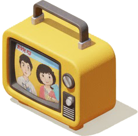

テレビ
動画を読み込んでいます。しばらくお待ちください...
準備完了、チャンネルを読み込んでいます...
チャンネルリスト
主题设置
深色模式
使用深色主题界面
界面设置
语言
选择界面显示语言
日本語
English
中文
显示底部信息栏
控制页面底部视频信息的显示
默认进入全屏模式
页面加载时自动进入全屏播放
播放设置
自动播放
选择频道后自动开始播放视频
自动切换下一个
当前视频结束后自动播放下一个
循环播放
播放列表结束后重新开始
紧凑模式
减少界面间距，显示更多内容
高级设置
调试模式
显示详细的调试信息
缓存视频信息
缓存频道视频列表以提高加载速度
频道统计
0
总频道数
0
总节目数
按地区分类
 動画を読み込んでいます。しばらくお待ちください...
動画を読み込んでいます。しばらくお待ちください...